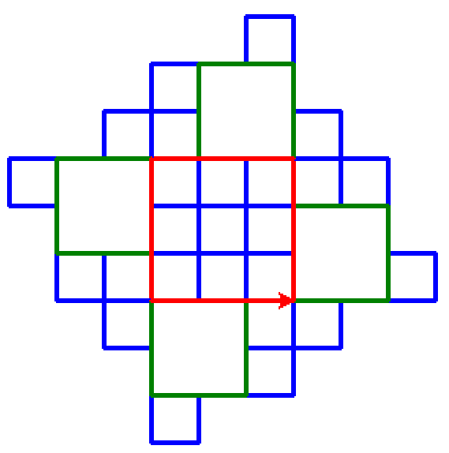

Summary
This example re-uses two existing transformations:
French Python, which uses a non-standard file extension .pyfr
as an indication that an import hook must be used; and repeat as a keyword.
French repeat¶


To produce the above image, you can use the following (files found in usage_demo directory):
# tortue_demo
try:
from ideas.included import french_repeat
except ImportError: # ideas is not installed
import os
import sys
os.chdir("..")
sys.path.insert(0, os.getcwd())
from ideas.included import french_repeat
french_repeat.add_hook()
import tortue # noqa
and
"""tortue.pyfr"""
de turtle importer color, fd, left, pen
pen(pensize=3)
répéter 4: # French ...
repeat 4: # or English ... both work.
repeat 4:
color('blue')
fd(30)
left(-90)
color('green')
fd(60)
left(90)
color('red')
left(90)
fd(90)
input("Press any key to quit.")
This is how I executed them:
(venv-ideas3.11) C:\Users\Andre\github\ideas\usage_demo
> py tortue_demo.py